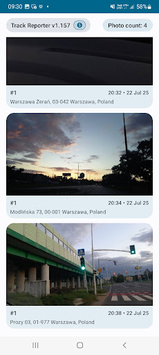
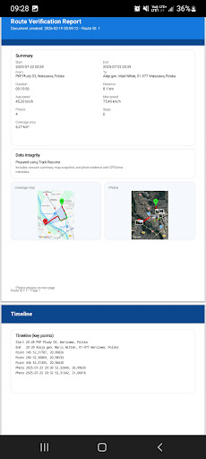

To create a useful site inspection report, combine the visit date, recorded GPS route, relevant photographs and a clear summary of the activity. Track Reporter brings route recording, photo evidence and PDF generation into one Android workflow for inspectors, contractors and maintenance teams.
What should an inspection report contain?
The report should identify the location and time of the visit, the areas covered, relevant observations and supporting evidence. Use photographs to show asset conditions or the results of a repair. Keep any required inspection checklist or compliance documentation alongside the recorded evidence.
- Visit date, duration and location context.
- A map showing the recorded route.
- Photographs linked to GPS positions and times.
- A readable report that can be shared or retained.
Create your report in three steps
1. Record the visit
Start a recording in Track Reporter when the visit begins. The app captures GPS positions and timestamps. Basic route recording works without mobile data, although position accuracy depends on the device and available satellite signal.
2. Capture photographs on site
Photograph relevant equipment, defects and completed tasks. Add useful context where available. The photo gallery connects images with the visit rather than leaving evidence scattered across messaging apps.

3. Review and export the report
Finish the recording, inspect the map and review the session details. Generate a PDF for the customer, supervisor or project file. For assigned jobs, see how to link routes to Work Orders.
View a real sample PDF
The sample Route Verification Report illustrates route maps, travel time, duration, distance and an activity timeline. It is a GPS documentation example, not a certified inspection form. Use the separate photo evidence workflow when your inspection requires images.

For inspection teams
Fleet managers can review shared routes and locations when team members choose to share. Online features require connectivity. Use this alongside your inspection process, not as a replacement for professional judgment or mandatory safety checks.
Explore the interactive route demo ↗
Frequently asked questions
Can I make a report directly on Android?
Yes. Track Reporter supports GPS recording, photographs and PDF reports.
Does a route prove the quality of an inspection?
No. It supports the visit record; inspection findings and required checks must still be reviewed.
Document your next field assignment.
Record routes, capture evidence and manage field work.